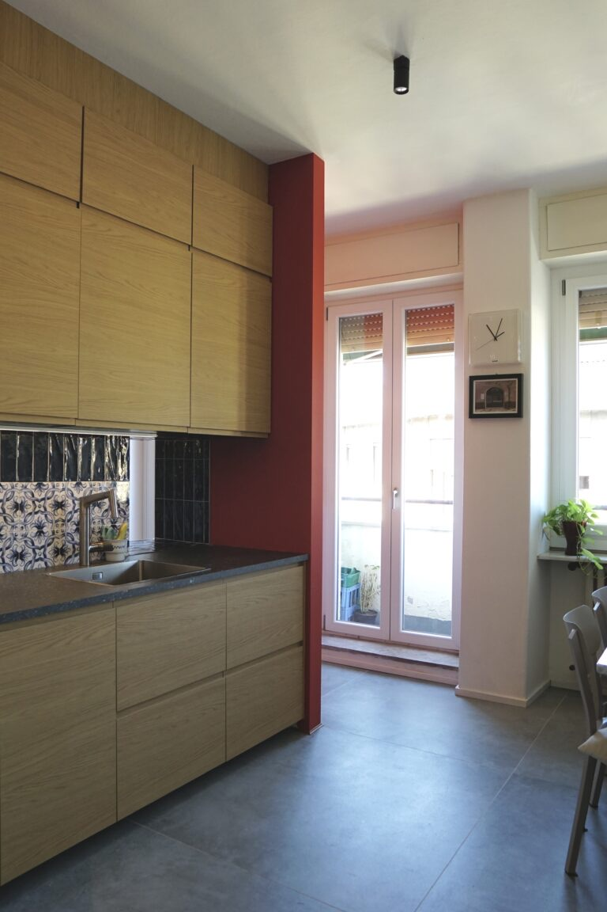
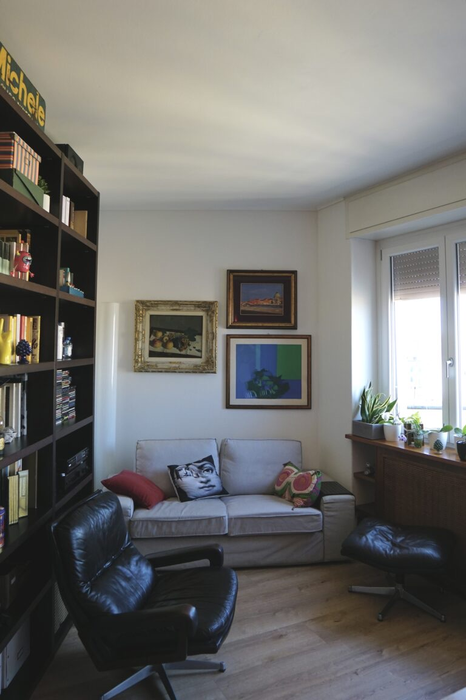
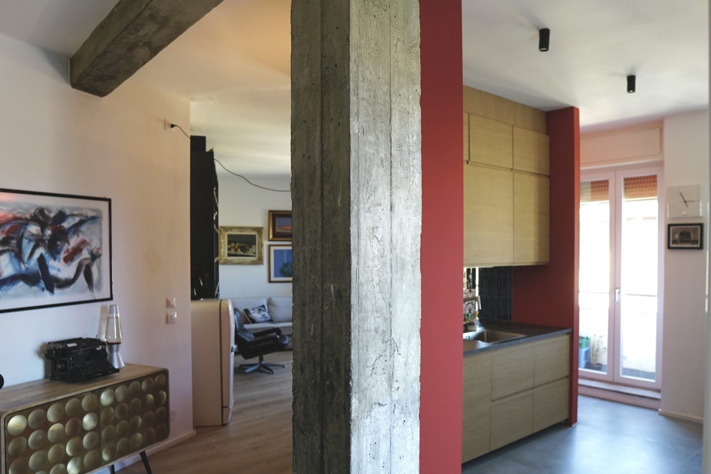
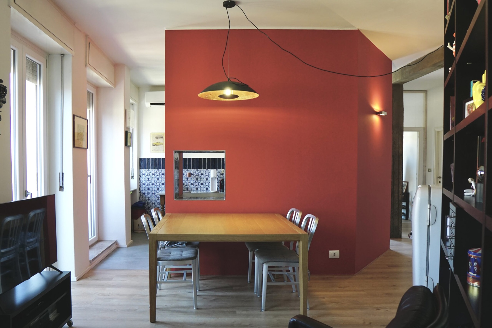
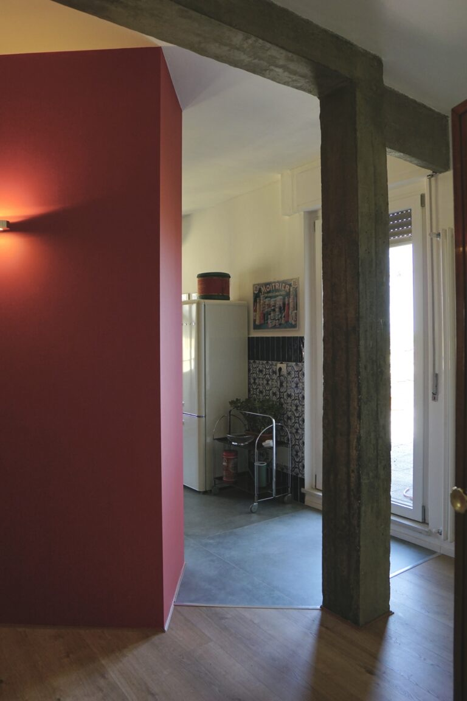
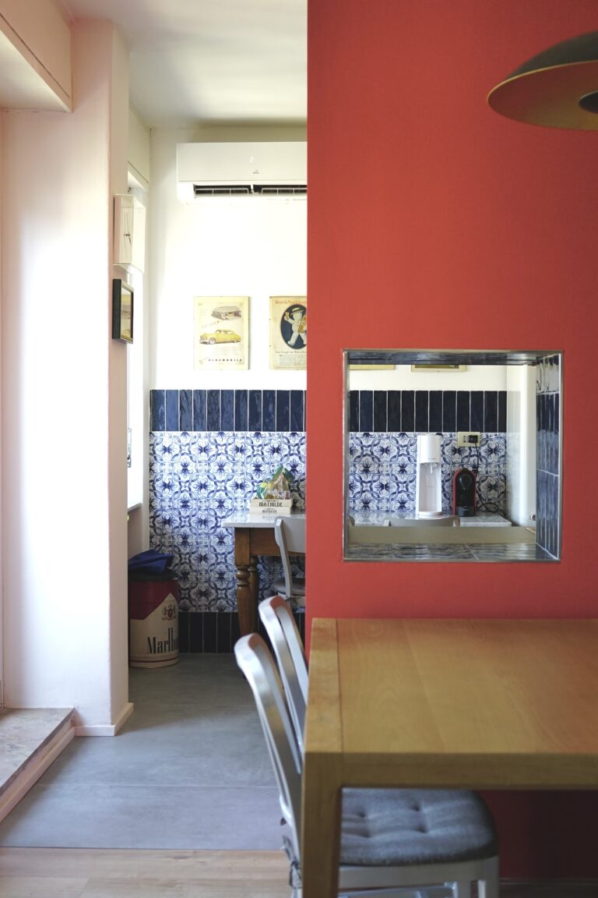
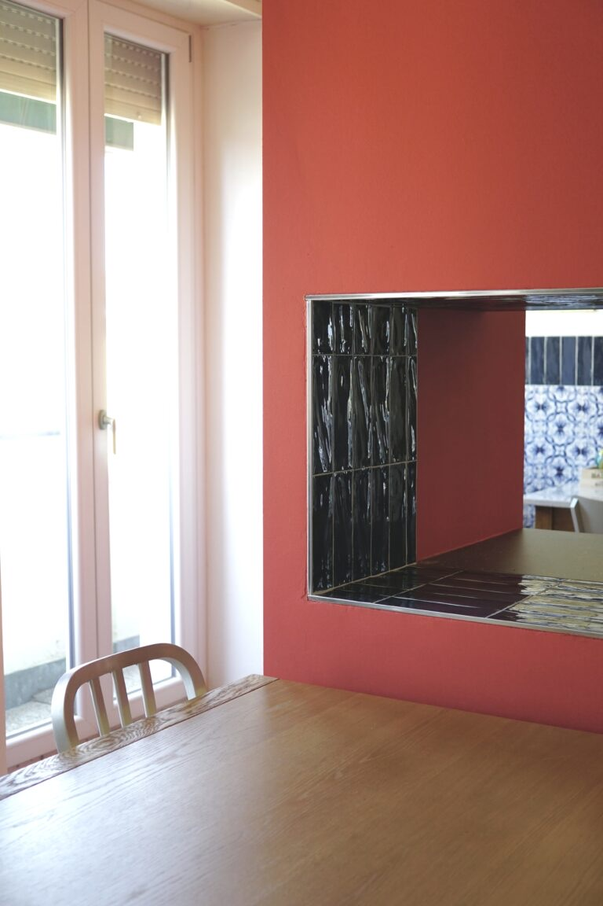
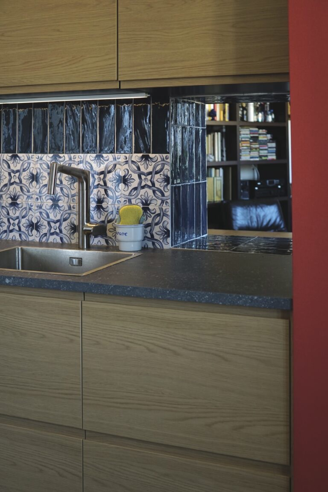
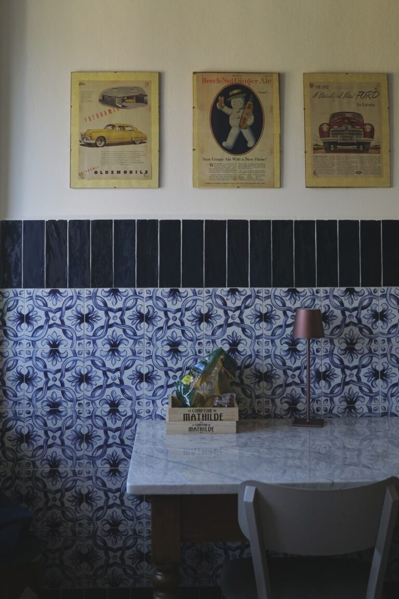
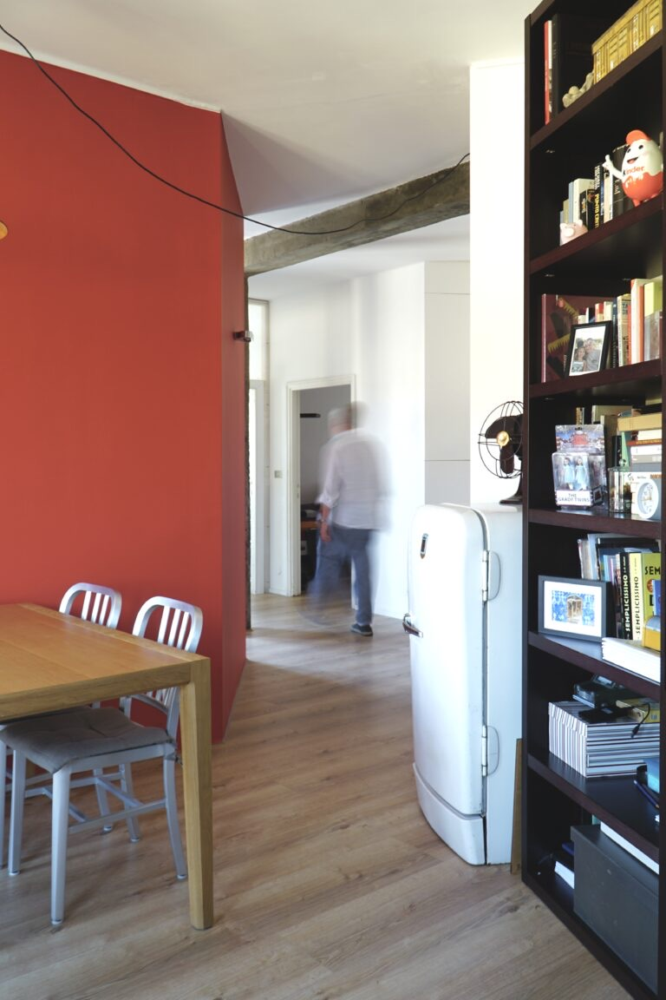

Casa Masolino
- Location
- Milan
- Year
- 2026
- In collaboration with
- Arch. Giuseppe Brollo
A home for a copywriter on the top floor. Seventy square metres organised around the kitchen, the beating heart of the home. Inclined walls draw small stages of domestic life, building perspectives that open one into another. Cuts and glimpses invite you to explore the space and discover its different relationships.
The kitchen, clad in red, is the hearth of the house. It is the space of Michele, who loves inviting friends, cooking and sharing time around the table. This is where the serving hatch comes from: an opening meant not only to pass dishes through, but above all to share a few more words with whoever is in the kitchen.









